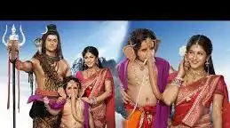

Star Cast:Devon Ke Dev Mahadev
Mohit Raina
In 2011, he was cast as the lead in Nikhil Sinha's Devon Ke Dev Mahadev.The series focused on the god Shiva and portrays his journey from a hermit to a householder through his marriage to Sati and later to Parvati. Mohit worked on improving his physique for the role,[11] and started learning the Indian classical dance form Kathak, which is integral part of his role as Shiva.[12] The Times of India said the role created fans due to his "fab abs, groovy smile and acting chops" He played over 30 different characters in the series, which ran for three years, ending in December 2014, by which time Mohit had become a celebrity!!!
Sonarika Bhadoria
Sonarika Bhadoria is best known for playing the role of Goddess Parvati in the popular Indian mythological series "Devon Ke Dev... Mahadev". She portrayed the character from 2012 to 2013. Her portrayal of Parvati gained her widespread recognition and popularity, making her a household name.
Sonarika Bhadoria's performance as Parvati was well-received, with many praising her portrayal of the goddess's divine and graceful aura. Her traditional looks and elegant style in the series were also highlighted. While she left the show in 2013, her portrayal of Parvati remains one of her most memorable roles.
Kumar Hegde
Kumar Hegde is an Indian actor known for playing the role of Nandi in the television series "Devon Ke Dev... Mahadev". He also portrayed Nandi in various episodes of the show. Additionally, he has appeared in other series like "Jai Hanuman" and "Shree Brahma Vishnu Mahesh".
Rushiraj Pawar
Pawar made his acting debut with the Marathi film, Manyaa The Wonder Boy, playing the young Manya. He then made his television debut the same year, playing the young Chandragupta Maurya in Chandragupta Maurya. For his performance, he won the ITA Award for Best Child Artist.[4]
From 2012 to 2014, Pawar played Kartikeya in Devon Ke Dev...Mahadev. Also in 2013, he played Suryakant "Surya" Shastri (younger version of Akshay Kumar) in Boss.
In 2015, Pawar first played Parijaat in Maharakshak: Devi. That same year Pawar played, Patta Chundawat in Bharat Ka Veer Putra Maharana Pratap

Sadhil Kapoor
Sadhil Kapoor is an indian child actor. He was well recognised for being Ganesha in Life OK's mythological series Devon Ke Dev Mahadev. Sadhil was also part of the shows like Bhai Bhaiya Aur Brother, Chintu Chinki Aur Badmash Company.
MADE WITH BY BHOOMI VERMA:A GROWING WEB DEVELOPER